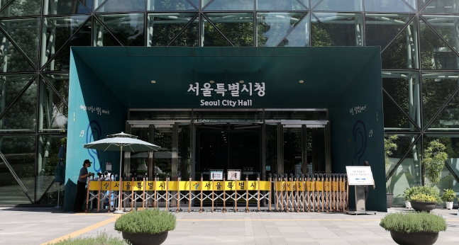

서울시청 전경. /뉴스1
서울시는 2024년도 7~9급 지방공무원 1602명을 채용한다고 14일 밝혔다. 모집 인원은 공개경쟁 1422명과 경력경쟁 180명이다. 채용 규모는 지난해보다 718명(31%) 줄었다.
채용 인원이 줄어든 것은 정부의 인력 효율화 기조에 따른 것이다. 서울시는 대기 인력과 예상 퇴직 규모를 감안해 업무 공백을 최소화하고 조직이 효율적으로 운영되도록 채용 인원을 결정했다.
전체 채용 규모는 감소했지만 ‘약자와의 동행’이라는 시정 목표에 맞춰 장애인과 저소득층 등 사회적 약자를 대상으로 한 구분모집 채용에서는 법정 의무채용 비율을 상회하도록 유지했다. 장애인은 3.8% 채용해야 하지만 5%를 할당했고, 저소득층 채용 비율은 10%로 의무 채용 비율(2%)보다 크게 높다.
직군별로는 행정직 930명·기술직 656명·연구직 16명을 뽑는다. 직급별로는 7급 206명·8급 10명·9급 1370명·연구사 16명이다. 이 중 장애인 83명과 저소득층 125명, 기술계고 31명을 선발한다.
8·9급(1349명)을 채용하는 제2회 공쟁경쟁·경력경쟁 임용시험 응시원서는 다음 달 25~29일 지방자치단체원서접수센터 홈페이지에서 접수한다. 필기시험은 6월 22일, 필기 합격자 발표일은 7월 25일이다. 최종 합격자는 10월2일 발표한다.
7급과 연구사 등(253명)을 선발하는 제3회 공개경쟁·경력경쟁 임용시험은 7월에 응시원서를 접수한다. 필기시험은 11월 2일에 실시한다. 자세한 내용은 서울시 인재개발원 홈페이지, 지방자치단체원서접수센터에서 6월 중 공고한다.